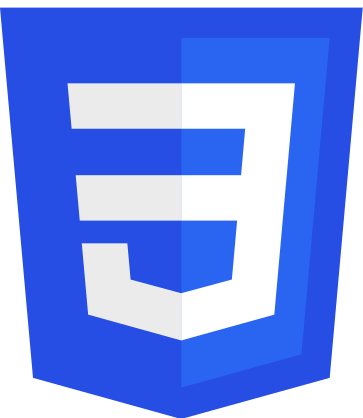
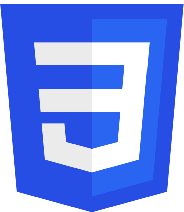

Qui suis-je ?
Après plusieurs expériences dans le domaine de l’environnement avec des missions en lien avec l'informatique; telles que la mise en place d'un ERP ainsi que d'un site web, communication via les réseaux sociaux; j’entreprends une reconversion en tant que développeuse web.
Les projets !

Mon parcours
J'ai travaillé presque 3 ans dans le recyclage de plastique. J'ai eu de multiples missions telles que :
- Digitalisation de l’entreprise :
- mise en place de l’ERP Ckdev : apprentissage de l'outil, réflexion sur la transposition du papier au logiciel, transmission des connaissances.
- Mise en place et gestion du site internet https://audiceplastics.eu/
- Coordination logistique, production et vente des matières plastiques
- Recherche de producteurs et valorisateurs de déchets en Europe. Visite de sites de production, compréhension et gestion des enjeux
J'ai été en alternance pendant 2 ans dans deux enseignes Biocoop de distribution bio à Villeneuve-d'Ascq et Lille
Mes principales missions étaient :
- Administration du site, de la page Facebook et communication sur lieu de vente
- Mise en place d’un évènement zéro déchet : 40 intervenants par édition. Record du nombre de passage caisse depuis la création du magasin en 1996.
- Analyse du magasin via les différents acteurs externes et internes les données chiffrées du magasin.
J'ai vécu et travaillé en Nouvelle-Zélande pendant 6 mois dans différentes structures.
Cela m'a permis de perfectionner mon anglais et d'obtenir 890/990 au TOEIC qui équivaut à un niveau C1.
Des compétences multiples
Je suis actuellement la formation développeur web fullstack Javascript chez O’clock.
Cette formation permet d'obtenir une équivalence bac+2 Développeur Web et Web Mobile.
On y voit plusieurs sujets tels que :
 



Le déroulement des cours se fait en 100% téléprésentiel, ce qui permet d'apprendre à travailler à distance en équipe.
Le maitre mot est la pratique ! Le matin nous corrigeons tous ensemble le challenge de la veille, l'après-midi nous abordons une nouvelle notion et le soir nous faisons un challenge pour mettre en pratique les connaissances apprises
Et après ?
Je finis la formation en juillet 2021 donc à partir de cette date là je serai en recherche d'emploi pour un poste de développeur web.
Des compétences ?
Avant d'entammer cette reconversion j'ai suivi des cours sur différentes plateformes aussi bien sur le thème les hard skills que les soft skills.
Apprenez à créer votre site web avec HTML5 et CSS3 - OpenClassrooms
Responsive Web Design - FreeCodeCamp.org
Apprendre à coder en JavaScript - pierre-giraud.com
Débutez l'analyse logicielle avec UML - OpenClassrooms
Réalisez le cahier des charges d'un projet digital - OpenClassrooms
Du manager au leader : devenir agile et collaboratif – CNAM
Apprenez à bien cadrer un projet multimédia - OpenClassrooms
Management de la diversité - Université de Montpellier
En ce qui concerne les études, j'ai obtenu le Master 2 à Espas qui est une école de commerce et sciences qui fait partie de l'Université Catholique de Lille
On échange !